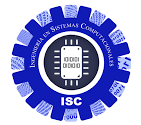

|  |
Ingeniería en Sistemas Computacionales |
Esta carrera cuenta con diversas materias de diferentes áreas, que buscan generar conocimientos sobre las habilidades blandas de las personas.
Por ejemplo:
Materias que ayudan a la lógica
Investigación de operaciones
Estructura de datos
Materias optativas
Aplicaciones moviles
Materias de Programación
Lenguaje de interfaz
Programación web